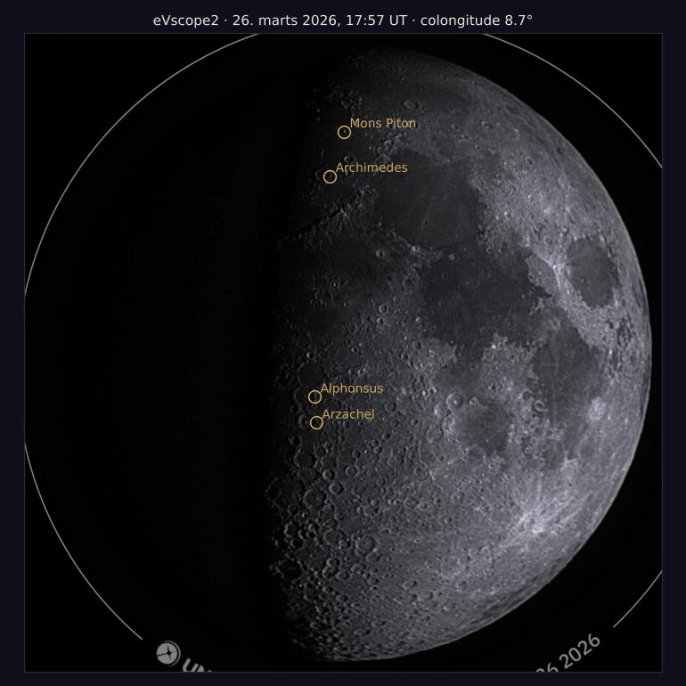
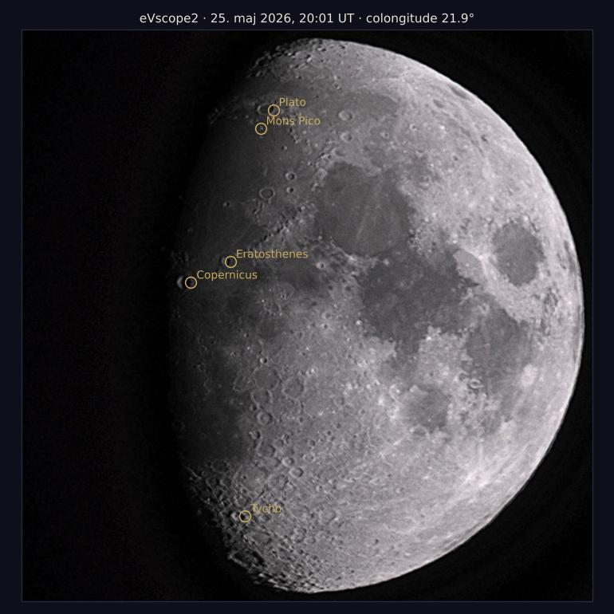
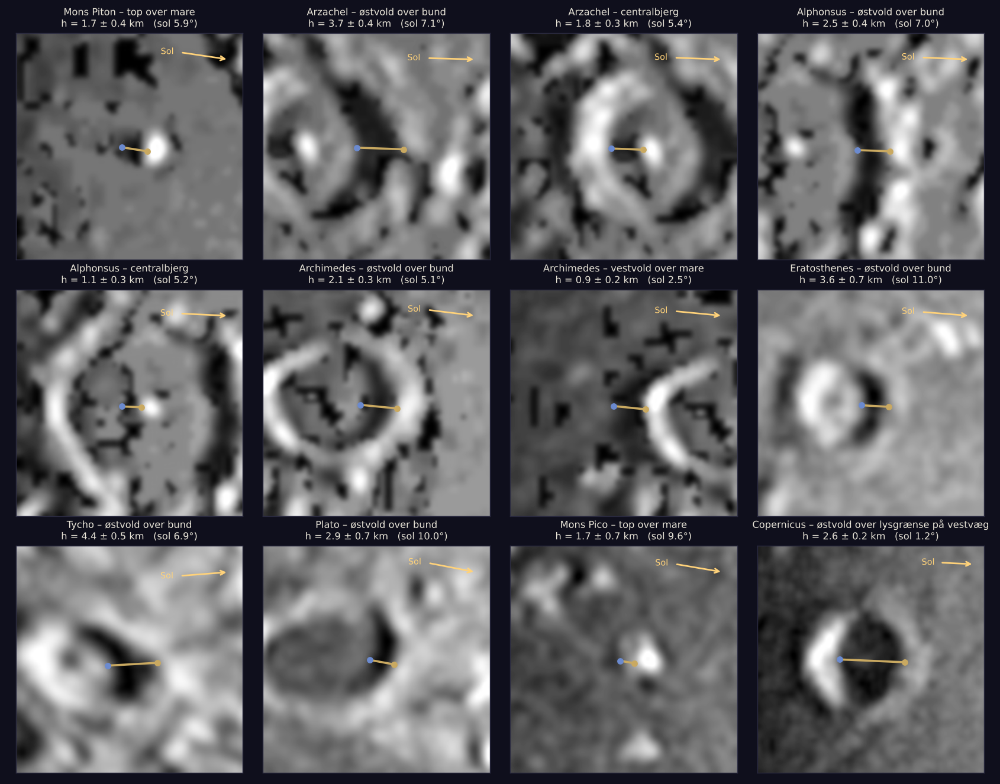

Månen målt med skygger
To gamle metoder brugt på mine egne billeder. Galilei bestemte højden af månebjergene ud fra deres skygger. Aristarch og Hipparch brugte Jordens skygge under en måneformørkelse til at finde Månens størrelse og afstand. Begge dele kan man gøre i dag med et lille teleskop med kamera.
Hent rapporten som PDF1 · Bjerge og kratere
Når Solen står lavt over et sted på Månen, kaster bjerge og kraterrande lange skygger. Kender man skyggens længde L og Solens højde α over horisonten lige der, er højden
Ved meget lave solhøjder er skyggerne så lange, at Månens krumning betyder noget, og jeg regner derfor geometrien helt ud i tre dimensioner: sollyset tangerer toppen og rammer overfladen ved skyggens spids.

Billederne
Jeg har brugt to af mine eVscope2-billeder med lange skygger nær terminatoren: 26. marts 2026 kl. 17:57 UT og 25. maj 2026 kl. 20:01 UT. eVscope2 har brændvidde 450 mm og pixels på 2,9 µm, så skalaen er 1,329″ pr. pixel, hvilket svarer til 2,4–2,5 km pr. pixel midt på Månen. Som kontrol har Månen på et råbillede fra 22. november 2026 radius 741,5 pixels, og efemeriden giver 737–741 pixels for den aften.
For hvert billede har jeg fundet Månens centrum og radius fra den lyse rand og drejningen af billedet ud fra 10 kendte kratere. Tilpasningen passer med 2 pixels i middel. Ud fra tidspunktet har jeg beregnet Solens stilling set fra Månen med IAU's rotationsmodel for Månen og en efemeride for Sol og Måne. Det giver Solens colongitude, og dermed solhøjden for hvert eneste punkt.


Sådan måles en skygge
Jeg lægger en linje gennem objektet i Solens retning og aflæser lysstyrken langs den. Skyggen begynder, hvor den belyste skråning slutter, og den ender, hvor lysstyrken er steget halvvejs op til den belyste bund. Begge punkter omregnes til selenografiske koordinater, og højden følger af geometrien.


Resultater
| Objekt | Hvad er målt | Solhøjde | Skygge | Målt højde | Litteratur |
|---|---|---|---|---|---|
| Mons Piton | top over Mare Imbrium | 5,9° | 15,5 km | 1,7 ± 0,4 km | 2,25 km |
| Arzachel | østvold over bunden | 7,1° | 27,5 km | 3,7 ± 0,4 km | dybde 3,6 km |
| Arzachel | centralbjerg | 5,4° | 18,6 km | 1,8 ± 0,3 km | 1,5–2,1 km |
| Alphonsus | østvold over bunden | 7,0° | 19,2 km | 2,5 ± 0,4 km | dybde 2,7 km |
| Alphonsus | centralbjerg | 5,2° | 11,7 km | 1,1 ± 0,3 km | 1,5–2,2 km |
| Archimedes | østvold over bunden | 5,1° | 21,8 km | 2,1 ± 0,3 km | dybde ca. 2,1 km |
| Archimedes | vestvold over mare | 2,5° | 19,1 km | 0,9 ± 0,2 km | – |
| Eratosthenes | østvold over bunden | 11,0° | 17,9 km | 3,6 ± 0,7 km | dybde 3,4 km |
| Tycho | østvold over bunden | 6,9° | 33,6 km | 4,4 ± 0,5 km | dybde 4,7 km |
| Plato | østvold over bunden | 10,0° | 16,2 km | 2,9 ± 0,7 km | 1,0–2,0 km |
| Mons Pico | top over Mare Imbrium | 9,6° | 9,6 km | 1,7 ± 0,7 km | 2,4 km |
| Copernicus | østvold over lysgrænsen på vestvæggen | 1,2° | 65 km | ≥ 2,6 ± 0,2 km | dybde 3,8 km |
Usikkerheden svarer til at flytte hvert endepunkt af skyggen én pixel. Kraterdybderne rammer de publicerede værdier inden for usikkerheden: Arzachel, Alphonsus, Archimedes, Eratosthenes og Tycho. Copernicus kan kun give en nedre grænse, for med Solen kun 1,2° over horisonten ligger hele bunden i skygge, og lyset begynder først oppe på vestvæggen. Til gengæld fanger centralbjergene sollyset midt i det mørke krater.
Andre fejlkilder: billederne er efterbehandlet med skarphedsfilter, som flytter kanter en smule. Tidspunktet i billedfilen kan være lokal tid eller UT. Jeg har brugt lokal tid, som passer lidt bedre med kalibreringen, men en time forskel flytter solhøjden 0,5° og ændrer højderne med 5–10 %.
2 · Jordens skygge og Månens afstand
Under den totale måneformørkelse 7. september 2025 fotograferede jeg Månen med mit eVscope2, lige da Månen var på vej ud af Jordens kerneskygge. Kanten af skyggen er et stykke af en cirkel, og dens krumning fortæller, hvor stor Jordens skygge er i forhold til Månen.

Skyggens radius målt i månens radier er
Tallet er gennemsnittet af ni tilpasninger med forskellig udglatning og afgrænsning (2,64–2,86). Ren geometri giver 2,70 den aften, og med de 2 %, Jordens atmosfære gør skyggen større (Danjons regel), bliver det 2,75.

Aristarchs og Hipparchs regnestykke
Jordens skygge er en kegle, fordi Solen er større end Jorden. Ved Månens afstand d er keglens vinkelradius Jordens radius set fra Månen minus Solens vinkelradius:

Her er θm Månens vinkelradius og θsol = 0,265° Solens. Månens vinkelradius har jeg målt på fem af mine eVscope2-billeder med pladeskalaen 1,329″ pr. pixel: 0,2657° ± 0,0072°. Spredningen er reel, for Månens afstand varierer. Med RJ = 6371 km giver det
Aristarch kunne ikke måle Månens vinkelstørrelse præcist, men han vidste, at Sol og Måne ser lige store ud. Sætter man θsol = θm, bliver vinklerne helt uden betydning for Månens radius:
Det er Aristarchs og Hipparchs resultat i moderne form: Månen er knap en fjerdedel af Jorden. Med den klassiske vinkelradius 0,25° giver samme regnestykke en afstand på 383 000 km, tæt på middelafstanden 384 400 km.